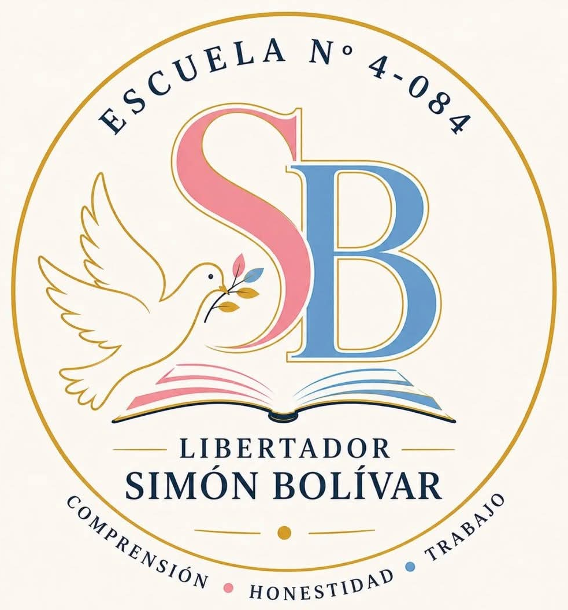

Escuela N° 4-084
3° 1° · Bachiller de Economía
Informática Aplicada
a la Gestión
Carpeta digital

informatica31simon.vercel.app
Escaneá el código para acceder

Escuela N° 4-084
3° 1° · Bachiller de Economía
Carpeta digital
informatica31simon.vercel.app
Escaneá el código para acceder